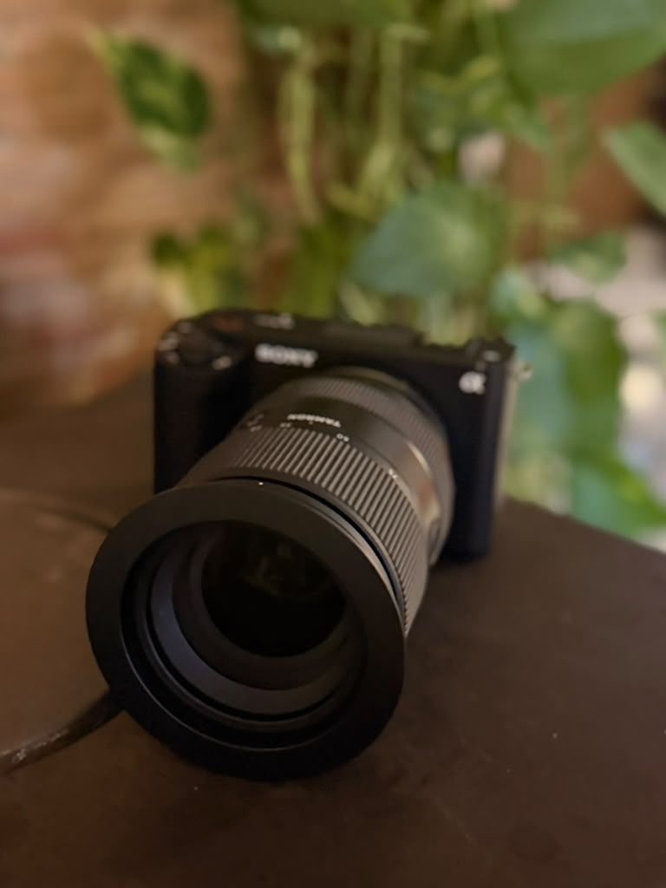
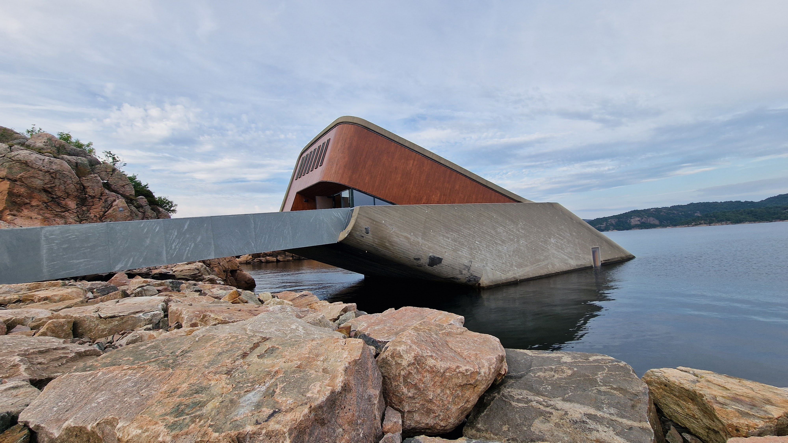
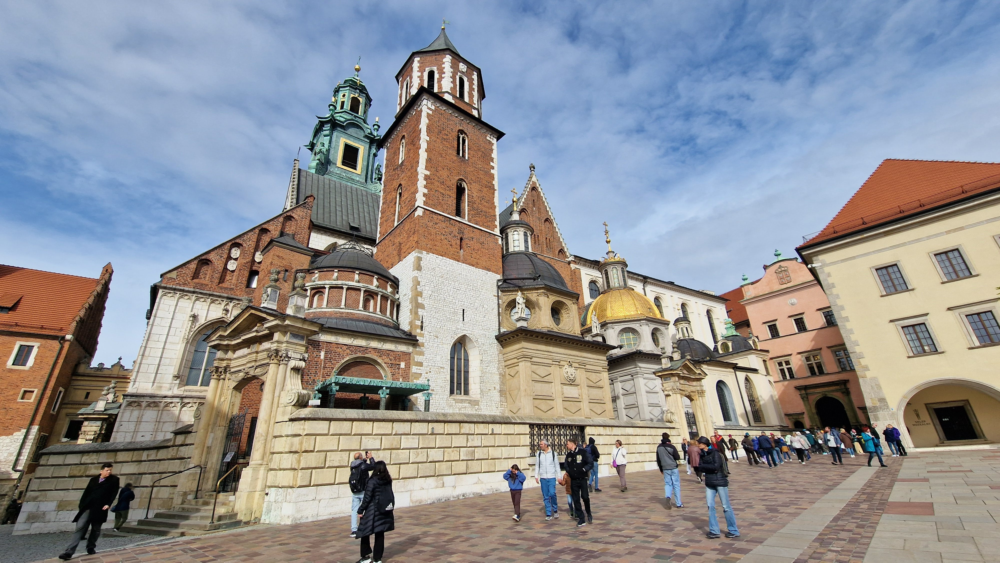
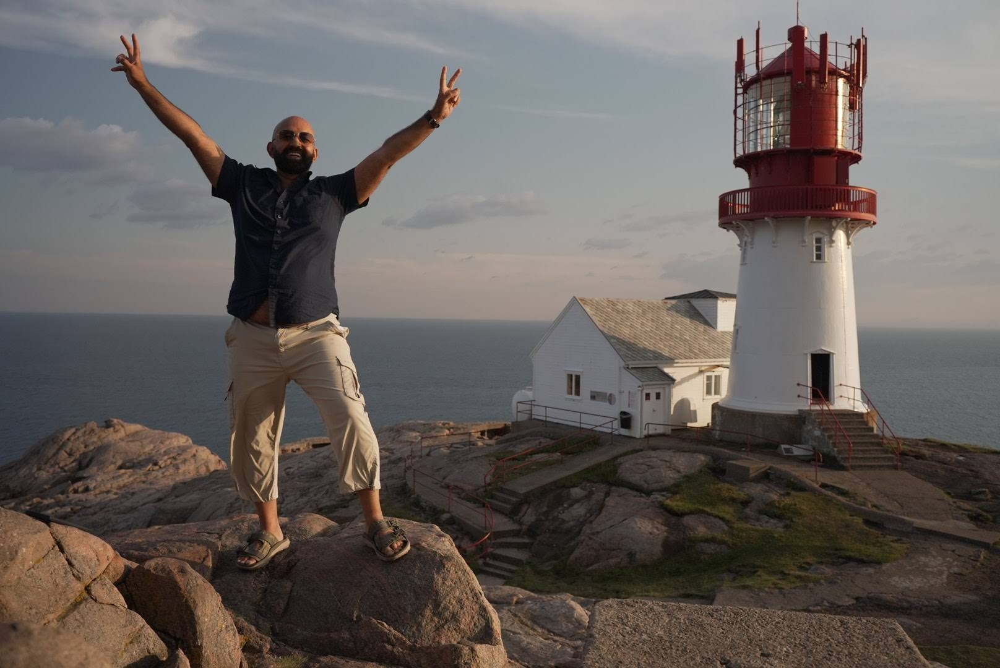
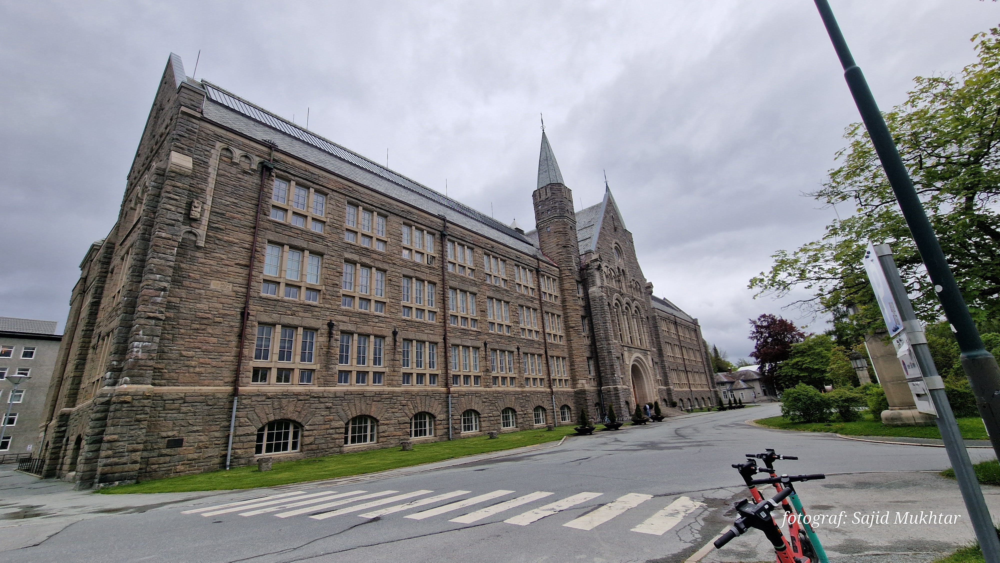
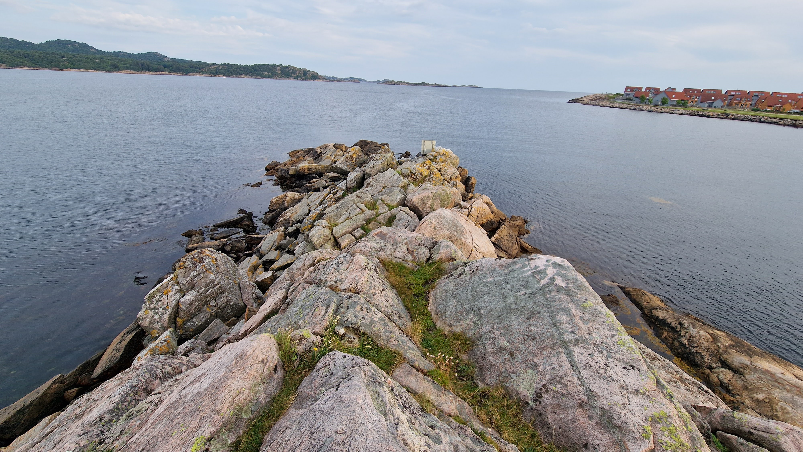
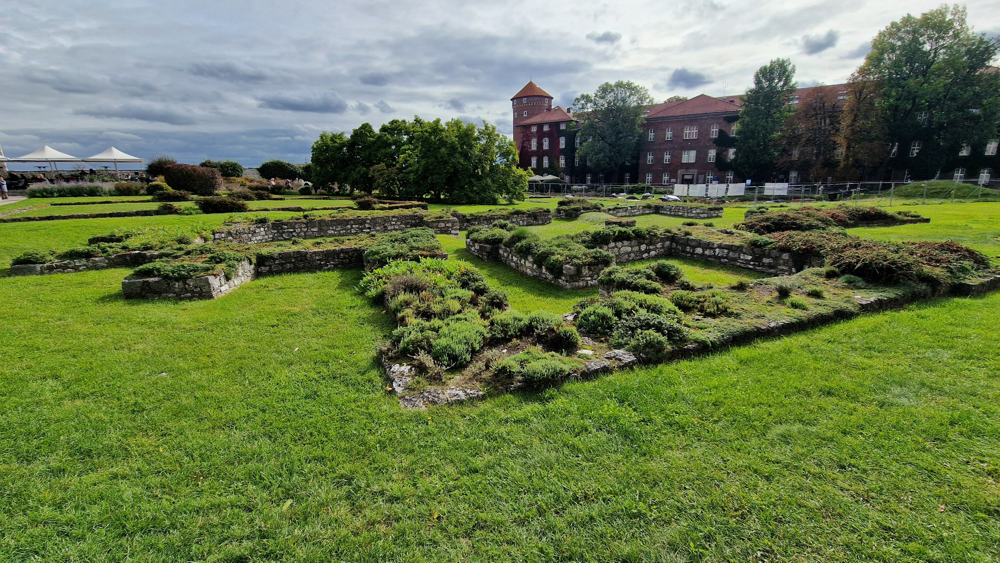
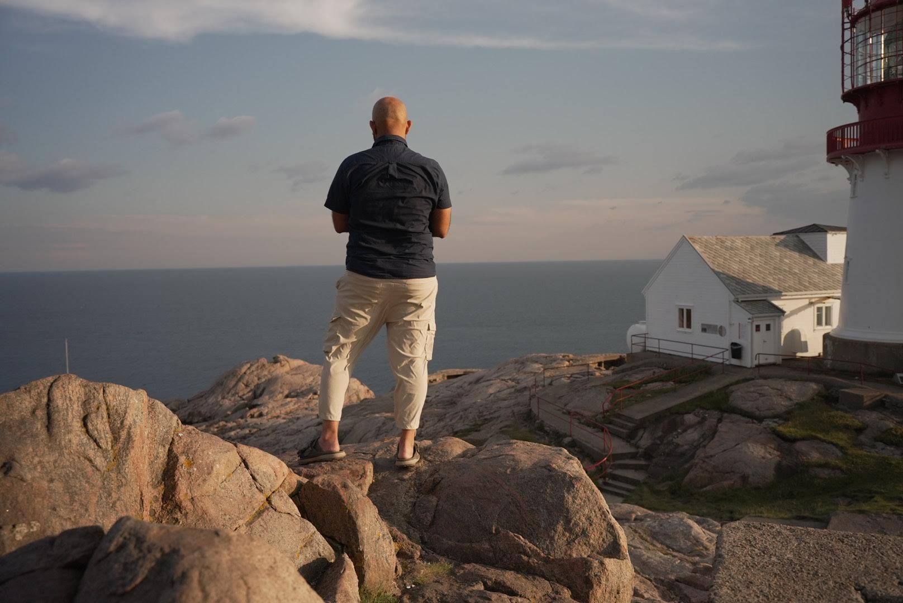

mediamukhtar.no · Sajid Mukhtar
Kunsten å fange det
flyktige øyeblikket
Fotograf i Drammen og Østlandet. Autentiske øyeblikk, ekte stemning og minner levert lynraskt.
mediamukhtar.no · Sajid Mukhtar
Fotograf i Drammen og Østlandet. Autentiske øyeblikk, ekte stemning og minner levert lynraskt.


Lidenskapelig fotograf i Drammen med Sony ZV-E1 Fullformat i bagen. Jeg fotograferer av ren skaperglede – derfor får du personlig engasjement, topp kvalitet og en veldig hyggelig pris.
«Min hovedjobb er å levere glede for øyeblikkene.»
Ingen månedslang venting. Bildene leveres raskest mulig mens latteren og stemningen fortsatt huskes.
Dere får samtlige originalbilder fra dagen – pluss 50 håndplukkede bilder ferdig profesjonelt redigert.
Gjelder ved ledig kapasitet. Når vi har inngått en avtale, stiller jeg alltid opp som avtalt.

Norges sydspiss mot Nordsjøen

Undervannsarkitektur i Båly

Høyfjellets dramatikk og farger

Gotiske spir og gyllen kuppel

Full energi ved havet

Monumental granittprakt

Stille kveldslys og blanke svaberg

Elvepromenaden i Kraków
Varmt og naturlig uttrykk

Middelalderruiner og parkanlegg

Stillheten ute ved storhavet

Fokus på ekte øyeblikk
Gjør en god gjerning samtidig som du får profesjonelle bilder! Hele honoraret for oppdraget kan innbetales 100 % uavkortet direkte til Falah For Alles veldedige arbeid via bedrifts-Vipps eller bankkonto.
Full dekning av ditt arrangement i Østlandet. Inntekten kan gå uavkortet til en god sak!
Har du et arrangement, behov for bedriftsfoto eller spørsmål om støttefotografering? Send meg en e-post, så svarer jeg raskt.
ℹ️ Jeg svarer kun på e-postforespørsler for media og fotografering.